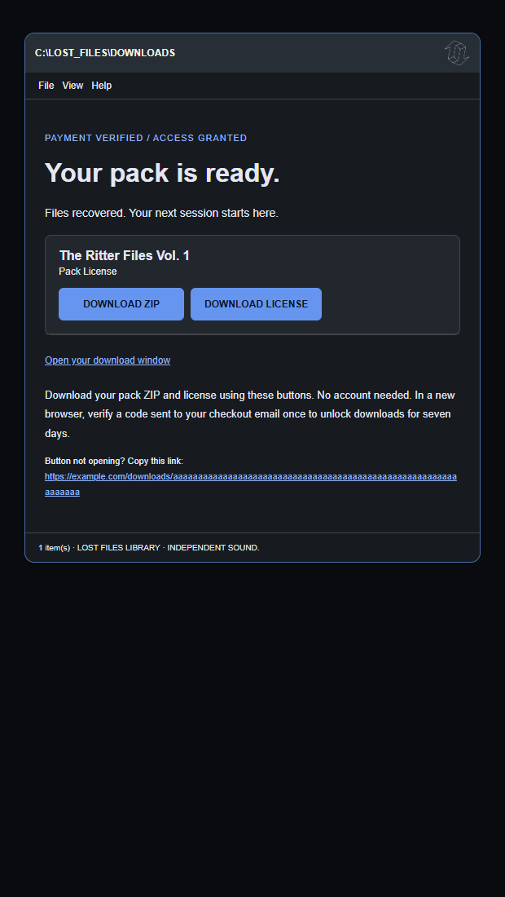
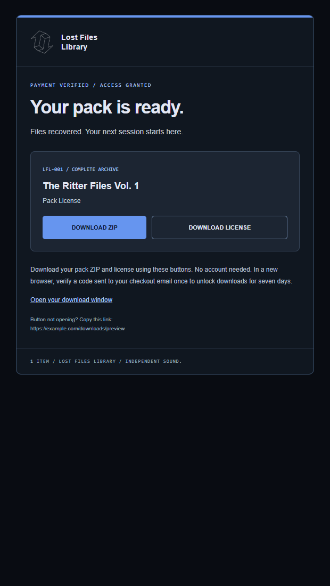
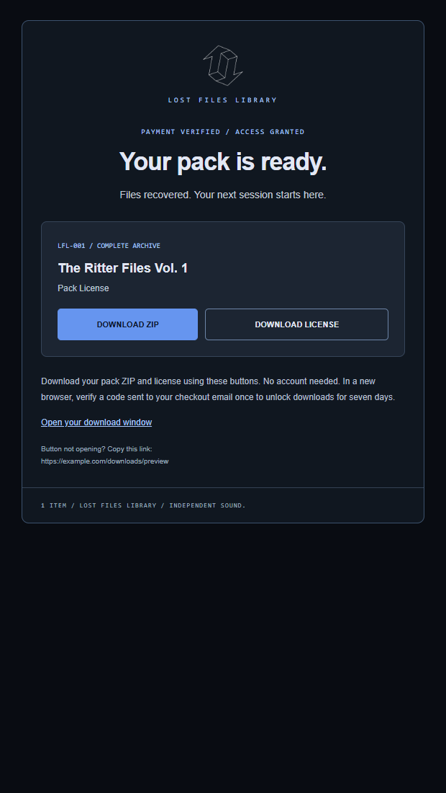
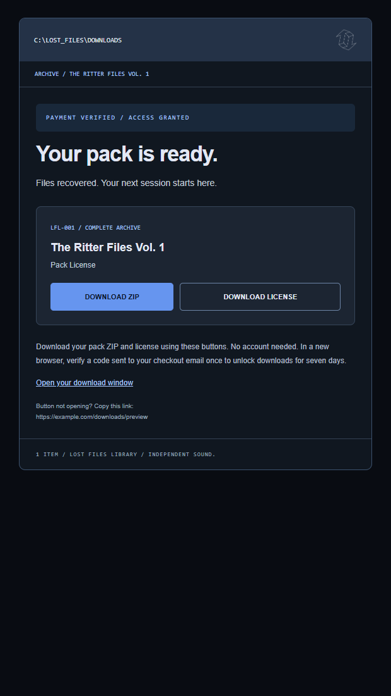
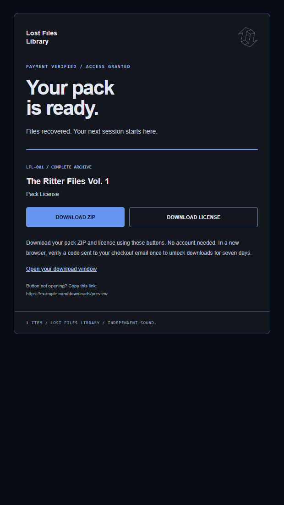
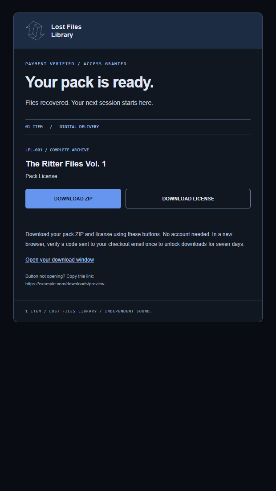
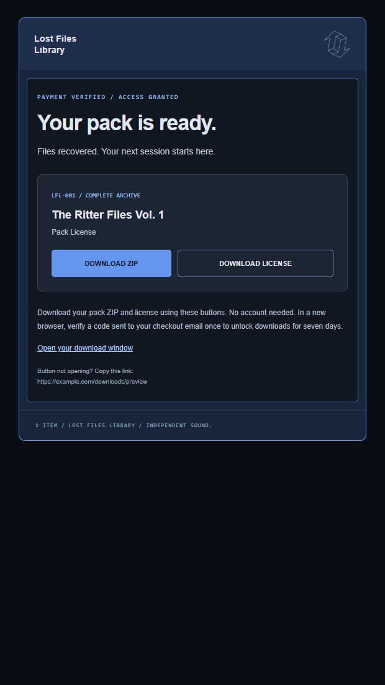
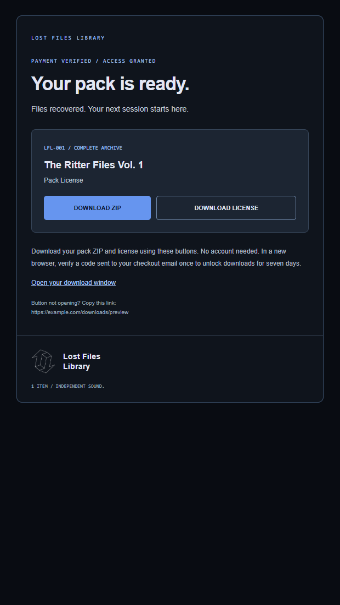
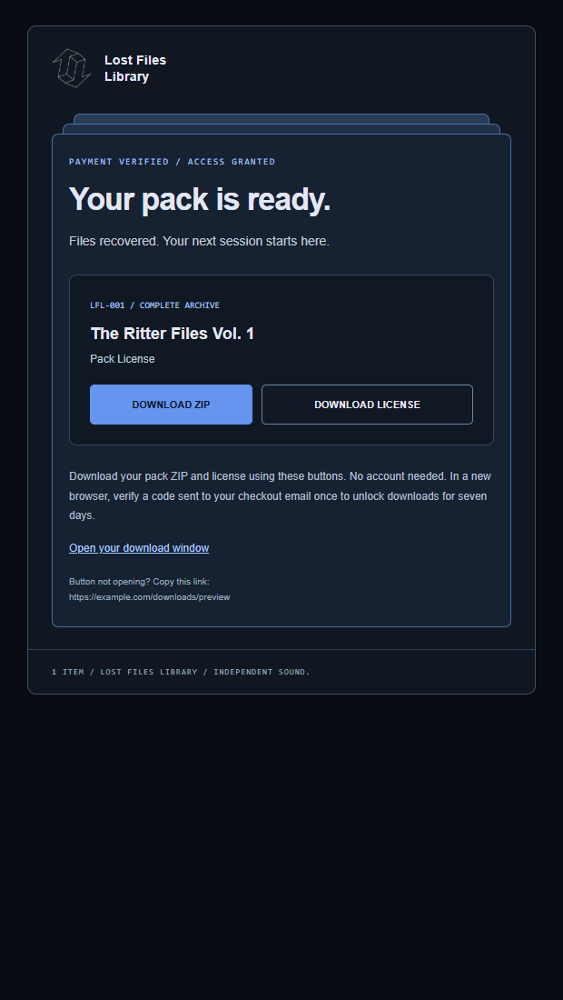

LOST FILES LIBRARY / DESIGN REVIEW
Your current email + eight directions.
00 is the actual purchase template, rendered with sample data. 01–08 are design concepts. All download links are disabled.
My pick: 01 Refined archive for the cleanest balance, or 03 Explorer window for the closest match to the site.
Existing purchase template · logo in the title bar

Recommended · familiar window, cleaner brand header

Centered logo · calm and balanced

Most like the site · logo at upper right

Large type · logo balances the heading

Structured receipt · logo in a compact brand strip

Bolder blue framing · small top-right mark

Quietest option · logo signs off at the bottom

Stacked-file detail · centered brand lockup

Browser previews; final selection still needs email-client testing. Sending templates are unchanged.